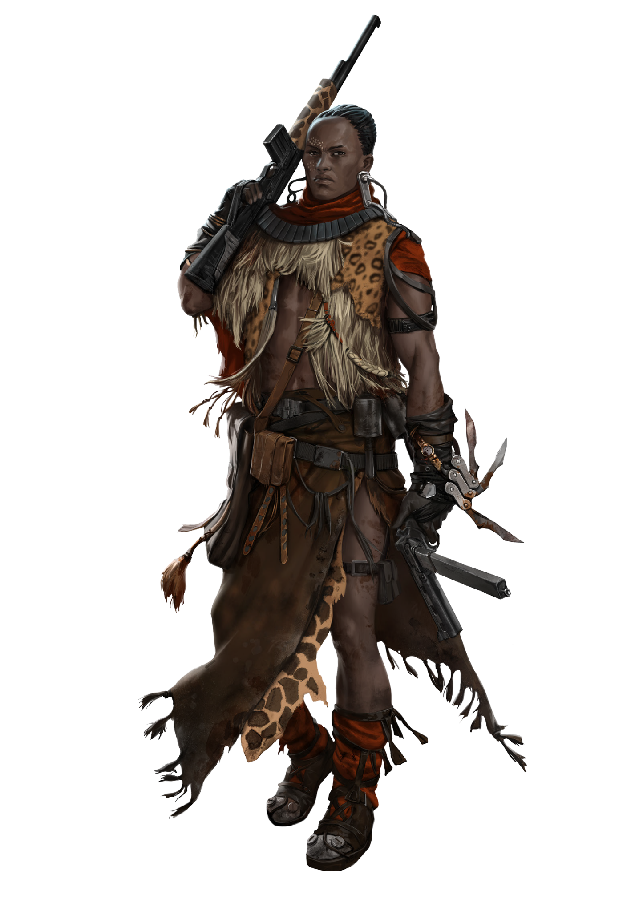

CLAN DOSSIER
Masai
Engai lives in the star stones.
KatharSys p. 245

ENGAI
A God Reborn
Masai tradition remembers Engai as the god who lived on Ol Doinyo Lengai and gave his chosen people their cattle. Life on the plains demanded strength and endurance, and the herds defined the relationship between the Masai and their protector.
The Eshaton shattered the mountain and covered the grazing lands in ash. Cattle died, while the great baobabs endured. The Masai understood this catastrophe as the death of Engai, but believed his spirit remained in the air and in the iron meteorites scattered across their homeland.
As plants and people changed around the star stones, destruction became a new revelation: Engai had returned within the transformed world. The meteorites still receive the Clan’s reverence and protection.
CHOSEN
Paths Through the Jungle
The Masai survive near the Psychovores through an intuitive sense for openings in the vegetation. This is not the Anubians’ immunity: they still fear the Raze and remain vulnerable to the dangers of the jungle.
Life at the forest’s edge keeps them apart from the cities. Tripol’s vehicles and noise overwhelm their heightened senses, while expeditions toward the southern lakes restore them physically and emotionally. They watch Anubian and Neolibyan society from a distance rather than making it their own.
Protecting the star stones takes priority over outsiders’ interests. When a hidden meteorite is discovered, its location becomes part of a new tale about a black lion. Landmarks woven into these stories preserve a map in the Clan’s shared memory.
SCOUTS
Between Wealth and Devotion
The jungle provides the Masai’s livelihood, but little that they produce can be exchanged for Dinars. Some younger members nevertheless admire Neolibyan wealth and Scourger equipment, and begin offering their skills for payment.
Their work includes hunting predators that threaten children and tracking escaped slaves into the Psychovores. They also guide Leopards along routes that avoid Neolibyan trading places. Such journeys let the scouts earn a living while diverting travelers from the sacred meteorites, whose disturbance they believe would bring Engai’s fury.